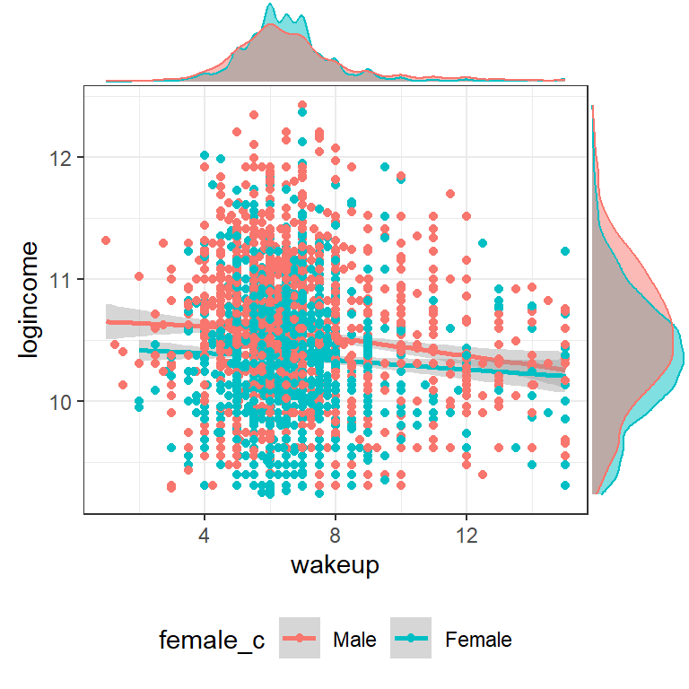
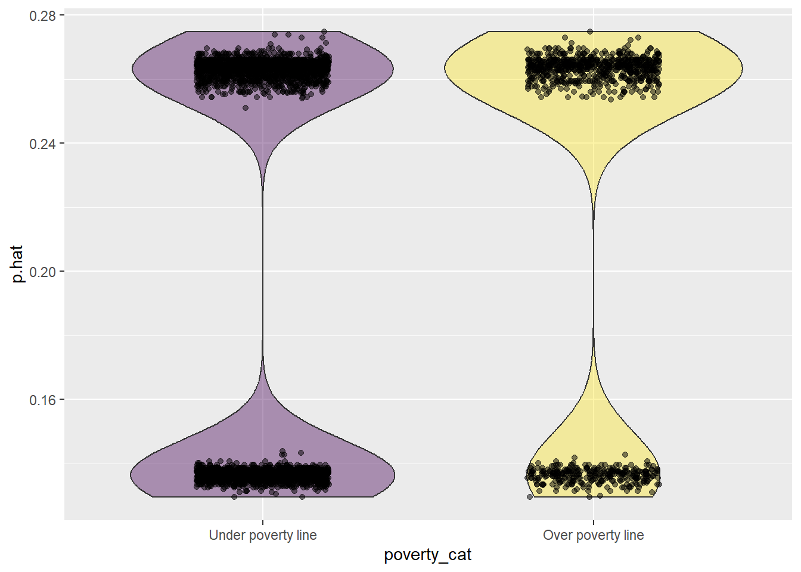

library(dplyr);library(ggplot2); library(scales)
library(gtsummary); library(broom);library(performance)
load("C:/Users/rdonatello/Box/Data/AddHealth/addhealth_clean.Rdata")HW 09: Fitting Multiple Regression models
Purpose
Practice fitting and interpreting different types of multiple regression models.
Assignment Overview
You will perform 4 regression analyses in this assignment. The instructions differ slightly for each model. Read the examples below carefully and follow all steps.
- Multiple Linear Regression: \(Y \sim X_{1} + X_{2}\).
- Use at least one quantitative and one binary predictor.
- Test for a potential confounder
- Multiple Linear Regression with a categorical predictor: \(Y \sim X_{1} + X_{2} \ldots X_{p}\).
- Use at least one quantitative and one categorical predictor.
- Regression on a log transformed outcome: \(ln(Y) \sim X_{1} + X_{2}\).
- \(X_{1}\) and \(X_{2}\) can be of any data type.
- Logistic Regression: \(logit(Y) \sim X_{1} + X_{2}\).
- Use one quantitative and one binary predictor.
- Your binary response variable \(Y\) must be coded as numeric 1 (event) and 0 (non-event).
- Use one quantitative and one binary predictor.
General Instructions
- Identify variables under consideration
- Write out the null, alternative, and confounder Hypotheses statements.
- Null - that there is no relationship between response and explanatory variables
- Alternative - that there is a relationship between response and explanatory variables.
- Confounder - that there is a relationship between response and explanatory variables after controlling for the confounding variable. (MLR only)
- Visualize and describe the relationships between the three variables under consideration
- Fit the simple bivariate model (MLR only)
- Model the response variable on the explanatory variable
y ~ x - Write a simple sentence on whether or not there is a relationship between x and y.
- Model the response variable on the explanatory variable
- Fit the multivariable model.
- Model the response variable on the explanatory variable and the third variable.
y ~ x + z - Write out the mathematical model
- If the relationship between x and y was significant, then determine if \(Z\) is a confounder.
- Model the response variable on the explanatory variable and the third variable.
- Assess model fit by examining the residuals. (MLR only)
- Interpret ALL regression coefficients (including the intercept) in a sentence that includes a confidence interval.
- For the Logistic Regression, interpret the Odds Ratio (not the regression coefficient directly)
- Write a conclusion.
- For linear and log-linear regressions also include an interpretation of the coefficient of determination in this conclusion.
Submission instructions
No template this time! Training wheels are off. Use the structure structure of prior assignments as a guide to create your own nicely formatted report.
Upload your rendered PDF to Canvas.
Multiple Linear Regression
1. Identify variables
If you have a likert “Strongly Agree” to “Strongly Disagree” variable that has at least 5 levels you can treat it as a pseudo-Quantitative Variable for this assignment.
- Quantitative outcome: Income (variable
income). - Quantitative predictor: Time you wake up in the morning (variable
wakeup) - Binary confounder: Gender (variable
female_c). This variable is 1 if female, 0 if male.
2. State hypotheses
- Null: There is no relationship between the time you wake up and your personal earnings
- Alternative: There is a relationship between the time you wake up and your personal earnings
- Confounder: There is still a relationship between the time you wake up and your personal earnings, after controlling for gender.
3. Visualize and describe the relationships. Make a statement whether or not you think a relationship exists.
ggplot(addhealth, aes(x=wakeup, y = income, color = female_c)) +
geom_point() + geom_smooth() + theme_bw()
There appears to be a flat, and somewhat linear trend between the time someone wakes up and their income. The trend for males looks slightly different than for females. A linear model may not be the best fit for this relationship given the skewness that is present in both income and wakeup time. Since the trend is flat, I do not expect there to be a significant slope between wake up time and income. I also expect that there may be a significant impact of gender on income given how much higher the male trend line is compared to the female trend line.
4. Fit the simple model
Is there a relationship between income and time a person wakes up?
lm.mod1 <- lm(income ~ wakeup, data=addhealth)
tidy(lm.mod1)# A tibble: 2 × 5
term estimate std.error statistic p.value
<chr> <dbl> <dbl> <dbl> <dbl>
1 (Intercept) 43548. 1126. 38.7 3.03e-276
2 wakeup -488. 151. -3.22 1.27e- 3The estimate of the regression coefficient for wakeup is significant (b1=-488, p= 0.001). There is reason to believe that the time you wakeup is associated with your income.
5. Fit the multivariable model, write the mathematical model.
Fit the same multiple linear regression model and include the potential confounding variable. Determine if the third variable is a confounder.
- Let \(y\) be
income - Let \(x_{1}\) be time when someone wakes up
wakeup - Let \(x_{2}=1\) when
female_c = 1, and 0 otherwise,
\[y = \beta_{0} + \beta_{1}x_{1} + \beta_{2}x_{2}\]
lm.mod2 <- lm(income ~ wakeup + female_c, data=addhealth)
tidy(lm.mod2)# A tibble: 3 × 5
term estimate std.error statistic p.value
<chr> <dbl> <dbl> <dbl> <dbl>
1 (Intercept) 48669. 1207. 40.3 2.06e-296
2 wakeup -611. 149. -4.09 4.37e- 5
3 female_cFemale -8527. 789. -10.8 8.09e- 27The relationship between income and wake up time is still significant after controlling for gender. Gender is not a confounder.
6. Assess model fit
check_model(lm.mod2)This model doesn’t fit the data incredibly well. The residuals are somewhat not normal, with predicted income higher than the observed. There is indication of non-constant variance as well, there is a quadratic trend to the standardized residuals when the fitted income is above 40k.
7. Interpret the regression coefficients of the multivariable model.
tbl_regression(lm.mod2, intercept = TRUE) %>%
add_glance_table(include = c(adj.r.squared))| Characteristic | Beta | 95% CI1 | p-value |
|---|---|---|---|
| (Intercept) | 48,669 | 46,303, 51,036 | <0.001 |
| wakeup | -611 | -904, -318 | <0.001 |
| female_c | |||
| Male | — | — | |
| Female | -8,527 | -10,075, -6,980 | <0.001 |
| Adjusted R² | 0.032 | ||
| 1 CI = Confidence Interval | |||
- \(b_{0}\): For a male (
gender=0) who wakes up at midnight (wakeup=0), their predicted average income is $48,669.4 (95% CI $46,303.9, $51,035) - \(b_{1}\): Holding gender constant, for every hour later a person wakes up, their predicted average income drops by $611 (95% CI $319, $904).
- \(b_{2}\): Controlling for the time someone wakes up in the morning, the predicted average income for females is $8,527 (95% CI $6,980, $10,074) lower than for males.
8. Write a templated conclusion
Use the numerical results from the multivariable model to fill in the values in the conclusion below. Replace the bold words with your variables, the highlighted words with data from your analysis, and choose between conclusion options.
After adjusting for the potential confounding factor of third variable, explanatory variable (b1 = parameter estimate, CI confidence interval range, p = significance value) was *significantly/not significantly and positively/negatively associated with response variable. Approximately R-Square*100 of the variance of response can be accounted for by explanatory after controlling for third variable. Based on these analyses, third variable is not/is a confounding factor because the association between explanatory and response is still/is no longer significant after accounting for third variable.
So the conclusion for this analysis reads:
After adjusting for the potential confounding factor of gender, wake up time (\(b_{1}\) =
-611, 95% CI: (-904, -318), p<.0001) was significantly and negatively associated with income. Approximately3.2%of the variance of income can be accounted for by wake up time after controlling for gender. Based on these analyses, gender is not a confounding factor because the association between wake up time and income is still significant after accounting for gender.
Multiple Linear Regression with a Categorical Predictor
1. Identify 3 variables
- Outcome: BMI (variable
BMI). This is a quantitative measure. - Predictor: Income (variable
income). This is a quantitative measure. - Predictor: general health (variable
genhealth). This is a categorical measure with levels: Excellent (reference), Very good, Good, Fair and Poor.
2. Visualize and describe the relationships. Make a statement whether or not you think a relationship exists.
ggplot(addhealth, aes(x=income, y = BMI, color = genhealth)) +
geom_point() + geom_smooth() + theme_bw()
There is a lot of clustering in the lower left corner of the scatterplot between income and BMI. The relationship between income and BMI seem the same for all general health categories, although it is noteworthy that no one that reported having poor health reported an income over $75,000. I do not expect there to be a significant relationship between income and BMI, but I do expect there to be a significant difference in BMI across general health category groups.
3. Fit the multivariable model.
Define what each \(x\) is, and write the mathematical model. State what group is the reference group.
- Let \(y\) be
BMI - Let \(x_{1}\) be
income - Let \(x_{2}=1\) when
genhealth='Very good', and 0 otherwise, - let \(x_{3}=1\) when
genhealth='Good', and 0 otherwise, - let \(x_{4}=1\) when
genhealth='Fair', and 0 otherwise, - let \(x_{5}=1\) when
genhealth='Poor', and 0 otherwise.
The reference group for genhealth is Excellent.
The mathematical model would look like:
\[ Y \sim \beta_{0} + \beta_{1}*x_{1} + \beta_{2}x_{2} + \beta_{3}x_{3} + \beta_{4}x_{4} + \beta_{5}x_{5} \]
gh.model <- lm(BMI~income + genhealth, data=addhealth)
tbl_regression(gh.model)| Characteristic | Beta | 95% CI1 | p-value |
|---|---|---|---|
| income | 0.00 | 0.00, 0.00 | 0.3 |
| genhealth | |||
| Excellent | — | — | |
| Very good | 1.6 | 0.99, 2.2 | <0.001 |
| Good | 4.8 | 4.1, 5.4 | <0.001 |
| Fair | 6.9 | 5.9, 7.9 | <0.001 |
| Poor | 9.4 | 6.6, 12 | <0.001 |
| 1 CI = Confidence Interval | |||
4. Interpret the regression coefficients.
- \(b_{0}\): The predicted BMI for individuals with no income and excellent health is 26.5 (25.9, 27.2).
- \(b_{1}\): After controlling for general health, for every additional $1 a person makes annually, their BMI decreases .0000047. This is not a significant relationship. A more meaningful interpretation would be to look at a $1000 increase in annual income. For every additional $1,000,000 in income a person makes annually, their BMI decreases by 4.7.
- \(b_{2}\): Those reporting very good health have 1.6 (0.99, 2.2, p<.0001) higher BMI compared to those reporting excellent health.
- \(b_{3}\):Those reporting good health have 4.8 (4.1, 5.4, p<.0001) higher BMI compared to those reporting excellent health.
- \(b_{4}\): Those reporting fair health have 6.9 (5.9, 7.9, p<.0001) higher BMI compared to those reporting excellent health.
- \(b_{5}\): Those reporting poor health have 9.4 (6.6, 12.1, p<.0001) higher BMI compared to those reporting excellent health.
5. Assess model fit
check_model(gh.model)
This model fits the data The predicted income is still higher than the observed, but perhaps less so compared to the model in the last example. However the non-constant variance is very clear, the variance of the residuals increase as the fitted values increase.
6. Write a conclusion.
After controlling for general health, income is not significantly associated with BMI. Because each level of general health is significantly different from the reference group, we can say that it is also associated with BMI.
Log Transformed Response
1. Identify variables
In the first example modeling income based on wakeup time and gender the model didn’t fit the data well and I believe it may be related to the skewness of the income measure. So in this analysis I will log transform income and model that as the outcome.
- Quantitative outcome that has been log transformed: Income (variable
logincome) - Quantitative predictor: Time you wake up in the morning (variable
wakeup) - Binary predictor: Gender (variable
female_c)
2. State hypothesis
- Null hypothesis: There is no relationship between the time you wake up in the morning and your income level after controlling for gender.
- Alternative hypothesis: There is a relationship between the time you wake up in the morning and your income level after controlling for gender.
3. Visualize and describe the relationships. Make a statement whether or not you think a relationship exists.
addhealth %>%
select(wakeup, logincome, female_c) %>% na.omit() %>%
ggplot(aes(x=wakeup, y = logincome, color = female_c)) +
geom_point() + geom_smooth() + theme_bw()
There appears to be a flat, and somewhat linear trend between the time someone wakes up and their income. The trend for males looks slightly different than for females. A linear model may not be the best fit for this relationship given the skewness that is present in both income and wakeup time. Since the trend is flat, I do not expect there to be a significant slope between wake up time and income. I also expect that there may be a significant impact of gender on income given how much higher the male trend line is compared to the female trend line.
At the earlier wakeup times, (before 10am) there seems to be a negative relationship between wakeup time and log-income, but only for men. I expect there to be a significant gender difference, as the bands for the lowess lines for each gender are pretty separated and don’t overlap.
4. Fit the multivariable model, write the mathematical model.
\[ln(Y) \sim \beta_{0} + \beta_{1}x_{1} + \beta_{2}x_{2}\]
ln.mod.2 <- lm(logincome~wakeup + female_c, data=addhealth)
tbl_regression(ln.mod.2) %>%
add_glance_table(include = c(adj.r.squared))| Characteristic | Beta | 95% CI1 | p-value |
|---|---|---|---|
| wakeup | -0.01 | -0.02, -0.01 | <0.001 |
| female_c | |||
| Male | — | — | |
| Female | -0.19 | -0.23, -0.16 | <0.001 |
| Adjusted R² | 0.036 | ||
| 1 CI = Confidence Interval | |||
There is a significant relationship between the time someone wakes up and the natural log of their income, after controlling for gender.
5. Assess model fit
check_model(ln.mod.2)
The model fit has improved! The predicted distribution matches the observed data better, the residuals are more normally distributed. Noteworthy that the lack of homogeneity of variance is still somewhat present, but not nearly at the extent from the non-transformed variable.
6. Interpret the regression coefficients.
1-exp(coef(ln.mod.2)[-1]) wakeup female_cFemale
0.01479693 0.17527851 1-exp(confint(ln.mod.2)[-1,]) 2.5 % 97.5 %
wakeup 0.02099299 0.008561652
female_cFemale 0.20231394 0.147326777- For every hour later one wakes up in the morning, one can expect to earn
1-exp(-0.015)= 1.4% less income than someone who wakes up one hour earlier. This is after controlling for gender. - Females have on average
1-exp(-0.19)= 17% percent lower income than males, after controlling for the wake up time.
7. Conclusion
Both gender and time one wakes up are significantly associated with the amount of personal earnings one makes. Waking up later in the morning is associated with 1.4% (95% CI 0.8%-2%, p<.0001) percent lower income than someone who wakes up one hour earlier. Females have 17% (95% CI 15%-20%, p<.0001) percent lower income than males. Time that someone wakes up and their gender explain 3.6% of the variability in someones annual income.
Logistic Regression
1. Identify variables
- Binary outcome: Poverty (variable
poverty). This is an indicator if reported personal income is below $10,210. - Binary predictor: Gender (variable
female_c) - Quantitative predictor: Sleep duration
sleep_duration
2. State hypotheses
Note the hypothesis is a statement about testing a relationship between one variable and the outcome after controlling for the other variable.
- Null hypothesis: There is no relationship between the probability of living below the poverty level and gender after controlling for the amount of sleep.
- Alternative hypothesis: There is a relationship between the probability of living below the poverty level and gender after controlling for the amount of sleep.
3. Visualize and describe the relationships. Make a statement whether or not you think a relationship exists.
addhealth %>%
select(sleep_duration, poverty, female_c) %>%
filter(sleep_duration > 0) %>%
mutate(poverty = factor(poverty,
labels = c("Under poverty line", "Over poverty line"))) %>%
na.omit() %>%
ggpubr::ggdensity(x = "sleep_duration",
fill = "poverty", facet.by = "female_c")
The distribution of sleep duration seems to be shifted slightly higher for those living over the poverty line compared to those living under, and does not seem to differ depending on gender.
4. Fit the multivariable model, write the mathematical model.
- Let \(p\) be the probability that a person reported an annual personal income below $10,210.
- Let \(x_{1}\) be sleep duration
- Let \(x_{2}\) be 1 for females, and 0 for males.
\[log(\frac{p}{1-p}) \sim \beta_{0} + \beta_{1}x_{1} + \beta_{1}x_{2}\]
log.mod <- glm(poverty~sleep_duration + female_c, data=addhealth, family='binomial')
tbl_regression(log.mod, exponentiate = TRUE)| Characteristic | OR1 | 95% CI1 | p-value |
|---|---|---|---|
| sleep_duration | 0.99 | 0.98, 1.01 | 0.3 |
| female_c | |||
| Male | — | — | |
| Female | 2.31 | 1.99, 2.68 | <0.001 |
| 1 OR = Odds Ratio, CI = Confidence Interval | |||
The p-value for the regression coefficient estimate of gender is highly significant. There is reason to believe that there is an association between gender and probability of living under the poverty line.
5. Interpret the Odds Ratio estimates
- After controlling for gender, every additional hour someone sleeps is associated with 0.99 (0.98, 1.01) times the odds of living under the poverty level. This is a non-significant difference.
- After controlling for sleep duration, females have 2.31 (1.99, 2.68) time the odds of reporting annual earned wages below the federal poverty level compared to males.
6. Template Conclusion
Replace the bold words with your variables, the highlighted words with data from your analysis, and choose between conclusion options.
After adjusting for the potential confounding factor of third variable, explanatory variable (OR odds ratio estimate, CI confidence interval range, p = significance value) was significantly/not significantly and positively/negatively associated with the likelihood of response variable. In this analysis, the odds ratio tells us that those who are [describe what dummy code 1 of your explanatory variable means here] are 0.05 times more (if OR greater than 1)/less (if OR less than 1) likely to [describe what dummy code 1 of your response variable means here].
So the conclusion for this analysis reads:
After adjusting for the potential confounding factor of sleep duration, gender (2.31, CI 1.99-2.68, p <.0001) was significantly and positively associated with the likelihood of earning under the poverty level. In this analysis, the odds ratio tells us that those who identify as female are 2.31 times more likely to earn income below the federal poverty level.